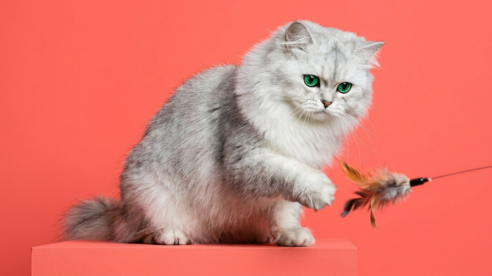

У шиншиллы каждая шерстинка кончается серебром: отсюда мерцающий эффект, который виден даже на фото. Это одна из самых красивых вариаций персидской породы, и при этом одна из самых требовательных к уходу. Ниже о том, что отличает её от стандартной персидской, как с ней уживаться и на что смотреть, выбирая котёнка.
🐾 Ваш питомец — персидская шиншилла?
Заведите профиль в AnimaLife: приложение запомнит породу, возраст и вес и будет подсказывать по уходу именно для неё. Вопросы AI-ветеринару — круглосуточно и бесплатно.
Завести профиль → Завести в MAX →
У вас iPhone? AnimaLife есть в App Store
Персидская шиншилла: разновидность персидской породы, выведенная специально ради окраса. Серебристый тон возникает за счёт типпинга: основание каждого волоса белое, а кончик тёмный. При движении шерсть переливается.
Несколько заметных отличий от типичного перса:
Именно долли-фейс снижает часть дыхательных рисков, характерных для брахицефалов с очень плоской мордой. Но полностью их не исключает: если у котёнка очень короткий нос, этот вопрос стоит обсудить с ветеринаром заранее.
Шиншилла спокойнее, чем выглядит. Активности в ней меньше, чем у мейн-куна или абиссинца, зато вдумчивости намного больше. Кошка наблюдает, выбирает момент для контакта, редко навязывается.
Несколько черт, которые замечают владельцы:
Агрессии почти нет: при стрессе шиншилла скорее уйдёт, чем вступит в конфликт.
Вот где порода требует дисциплины. Серебристая шерсть густая и длинная: без регулярного расчёсывания сваливается в колтуны за несколько дней.
Минимальный распорядок:
Глаза у шиншиллы с выраженными складками вокруг морды склонны к слезотечению. Протирать уголки ежедневно чистой салфеткой: это норма ухода, а не экстренная мера. Если выделения изменили цвет или запах, обратитесь к ветеринару: самостоятельно ставить причину не стоит.
Персидская шиншилла хорошо вписывается в тихий домашний ритм. Подходит людям, готовым тратить на груминг 20-30 минут несколько раз в неделю и выстраивать с кошкой доверительный контакт постепенно.
При выборе котёнка обратите внимание:
Покупать шиншиллу у заводчика, который показывает документы и разрешает посмотреть условия содержания: разумная позиция. Котята с рынков часто имеют проблемы со здоровьем, которые проявляются позже.
Материал носит информационный характер и не заменяет очную консультацию ветеринара.
🐾 У вас персидская шиншилла?
AnimaLife соберёт уход под породу: к каким болезням есть склонность, что проверять по возрасту, чем кормить и когда пора к врачу. Бесплатно, прямо в мессенджере.
Собрать план ухода → Собрать в MAX →
У вас iPhone? AnimaLife есть в App Store
🐾 Понравился разбор?
Подпишитесь на канал — каждый день разбираем по одному тревожному симптому у кошек и собак: что в пределах нормы, а когда пора к врачу. Подпишитесь, чтобы не пропустить разбор, который может спасти здоровье вашего питомца.